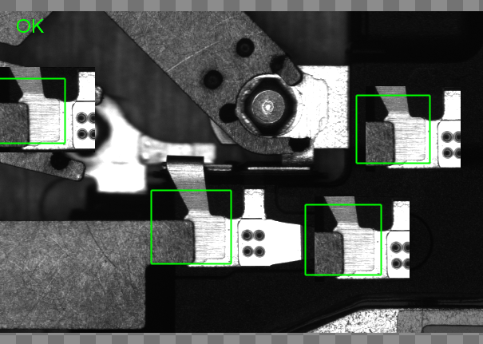
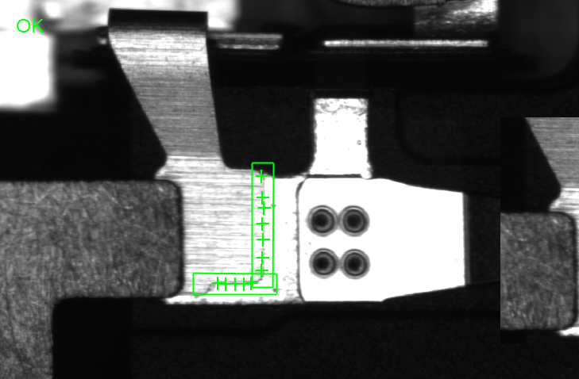
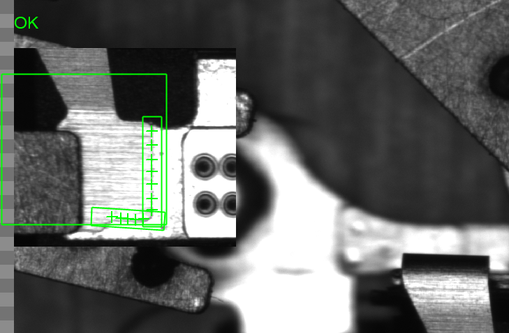

Công cụ này là công cụ tùy chỉnh cho dự án SLAM, chỉ có tác dụng với hình ảnh cụ thể, chủ yếu có các chức năng sau：



| Phân loại | Tên tham số | Mô tả tham số |
|---|---|---|
| Cửa sổ thuộc tính | Loại chế độ | Có thể chọn：chỉ phát hiện, chỉ nhận dạng, phát hiện và nhận dạng. |
| Có bật ROI hay không | Có bật ROI hay không, nếu là Không, thì thực hiện matching nhận dạng toàn ảnh（chỉ có hiệu lực khi chọn chỉ nhận dạng）. | |
| Ngưỡng phát hiện | Ngưỡng phát hiện, dùng để lọc bỏ khung phát hiện có điểm số thấp, phạm vi giá trị là số thực dấu phẩy động (0.0,1.0]. | |
| Ngưỡng nhận dạng | Ngưỡng nhận dạng điểm then chốt, dùng để lọc bỏ kết quả nhận dạng có điểm số thấp, phạm vi giá trị là số thực dấu phẩy động (0.0,1.0]. | |
| Số lượng điểm then chốt theo chiều dọc | Số lượng điểm dùng để fitting khung chữ nhật theo chiều dọc, phạm vi giá trị là số nguyên [0,50]. | |
| Chiều dài cạnh X vùng phát hiện 1 | Chiều dài cạnh X của hình chữ nhật thứ nhất được fitting, phạm vi giá trị là số thực dấu phẩy động [0,500]. | |
| Chiều dài cạnh Y vùng phát hiện 1 | Chiều dài cạnh Y của hình chữ nhật thứ nhất được fitting, phạm vi giá trị là số thực dấu phẩy động [0,100]. | |
| Chiều dài cạnh X vùng phát hiện 2 | Chiều dài cạnh X của hình chữ nhật thứ hai được fitting, phạm vi giá trị là số thực dấu phẩy động [0,500]. | |
| Chiều dài cạnh Y vùng phát hiện 2 | Chiều dài cạnh Y của hình chữ nhật thứ hai được fitting, phạm vi giá trị là số thực dấu phẩy động [0,100]. | |
| Chuỗi dữ liệu | Ảnh đầu vào | Ảnh đầu vào dùng để nhận dạng thời gian thực, chỉ hỗ trợ ảnh xám. |
| Biến đổi tuyến tính hai chiều | Kết quả biến đổi tuyến tính hai chiều định vị đầu vào, dùng để biến đổi vùng nhận dạng tương ứng theo kết quả đó |
| Phân loại | Tên tham số | Mô tả tham số |
|---|---|---|
| Cửa sổ đầu ra | Ảnh đầu vào | Chiều rộng, chiều cao, kích thước pixel của ảnh đầu vào. |
| Hình chữ nhật vị trí tổng thể phát hiện | Có hiệu lực khi chọn chế độ chỉ phát hiện, phát hiện và nhận dạng, là tất cả các hình chữ nhật khung phát hiện thu được khi định vị. | |
| Vùng hình chữ nhật nhận dạng | Có hiệu lực khi chọn chế độ nhận dạng, là tất cả các hình chữ nhật khung văn bản thu được trong quá trình nhận dạng. | |
| Vùng phát hiện 1 | Hình chữ nhật thứ nhất được fitting | |
| Vùng phát hiện 2 | Hình chữ nhật thứ hai được fitting | |
| Điểm then chốt | Điểm then chốt nhận dạng được | |
| Điểm số điểm then chốt | Điểm số của điểm then chốt nhận dạng được | |
| Kết quả thực thi | Kết quả thực thi công cụ. | |
| Thời gian thực thi | Thời gian thực thi công cụ. | |
| Chuỗi dữ liệu | Vùng phát hiện 1 | Hình chữ nhật thứ nhất được fitting |
| Vùng phát hiện 2 | Hình chữ nhật thứ hai được fitting |
Do công cụ này sử dụng phương pháp deep learning để nhận dạng, nên cần tải mô hình đã được huấn luyện, sẽ làm tăng một phần thời gian xử lý, cụ thể thể hiện ở：
Lần thực thi đầu tiên sau khi thêm công cụ mới.
Khi tải project có chứa công cụ này.
Khi chọn chế độ chỉ nhận dạng, cần bật ROI
Tham khảo “\Samples\关键点检测工具.gvp”。